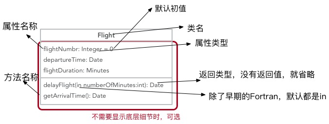
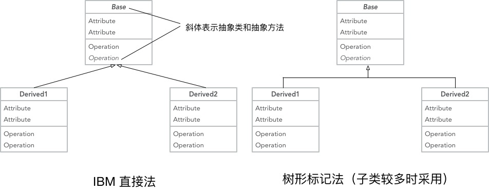
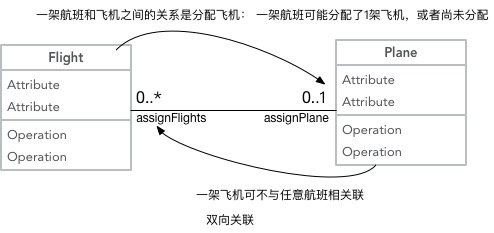

|
|
☰ 目录
20180528 UML原文链接： https://www.ibm.com/developerworks/cn/rational/rationaledge/content/feb05/bell/index.html 在 UML 2 中有二种基本的图范畴：结构图和行为图。每个 UML 图都属于这二个图范畴。 1）结构图的目的是显示建模系统的静态结构。它们包括类，组件和（或）对象图。 2）另一方面，行为图显示系统中的对象的动态行为，包括如对象的方法，协作和活动之类的内容。行为图的实例是活动图，用例图和序列图。 1- 基础如先前所提到的，类图的目的是显示建模系统的类型。在大多数的 UML 模型中这些类型包括：
UML 为这些类型起了一个特别的名字：“分类器”。通常地，你可以把分类器当做类，但在技术上，分类器是更为普遍的术语，它还是引用上面的其它三种类型为好。 基本类图一个基本类图如下，  带继承关系的类图两种方式，一种是在IBM Rational Rose和IBM Rational XDE中使用的方法， 另一种采用树形标记。  2- 关联有5种关联类型。 双向关联彼此之间都知道对方的联系  多重值和它们的表示，
参考： UML 基础：https://www.ibm.com/developerworks/cn/rational/rationaledge/content/feb05/bell/index.html UML类图简明教程：https://blog.csdn.net/AllenWells/article/details/47398091 深入浅出UML类图（一）：https://blog.csdn.net/lovelion/article/details/7838679 UML实践详细经典教程----用例图、顺序图、状态图、类图、包图、协作图：https://blog.csdn.net/zfrong/article/details/4086424 |